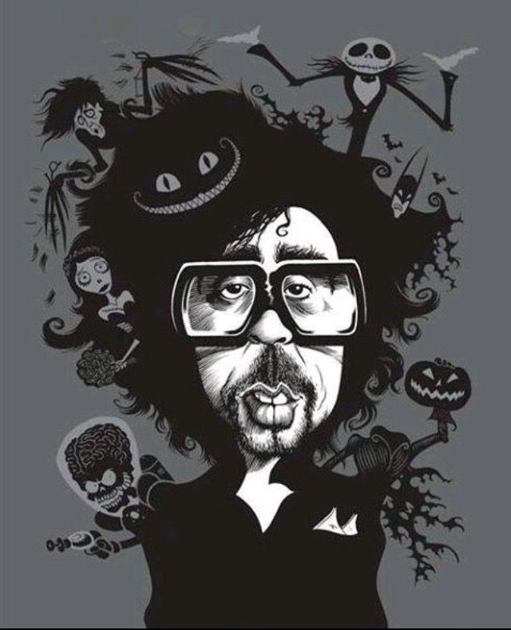

🖤 Estilo y Temática de Tim Burton
- Estética gótica y oscura: edificios torcidos, sombras marcadas, colores contrastantes.
- Personajes excéntricos: solitarios, incomprendidos, a veces macabros pero tiernos.
- Combinación de humor negro y fantasía: mezcla lo macabro con lo poético o divertido.
- Elementos visuales únicos: ojos grandes, proporciones exageradas, cuerpos delgados.
- Música y atmósfera: colaboraciones con Danny Elfman que refuerzan el tono oscuro y emocional.
- Temas recurrentes: alienación, identidad, amor imposible, amistad con lo extraño.